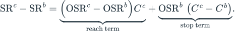

整体概括
把教师走过的路交给执行器学
H2E 是任务级经验蒸馏：带语言规划器的 agent 只用在训练侧，在同一任务指令下，把它调用 VLA 或独自走出的轨迹转成路点和停止监督。测试仅保留视觉—语言—动作执行器。REVERIE-CE 未见场景全部 3189 个回合上，8B VLA 的成功率从 35.0% 变为 44.9%。
对照原文证据
We distill successful agent experience into the VLA instead of distilling the planner. The VLA then navigates alone at test time.We present H2E , a task-level experience distillation method. Figure 2 gives an overview. H2E uses three simple rules. First, it labels every motion in a session as a VLA action under the original task instruction, whoever made the motion. Second, it masks the loss on steps that move away from the goal. Third, it labels every visited state near the goal as a stop. A LoRA update then trains the VLA, which runs without the LLM at test time.On all 3189 REVERIE-CE val-unseen episodes, H2E raises the success rate of an 8B VLA from 35.0% to 44.9%.成功变多，不能只问是否找到目标
评测把途中到过目标区与最终停在区内分开。H2E 比原执行器成功率高，但到达比例并没提高；比只做测地专家适配时则主要是到达表现更好。这说明同一项成功率提升可能来自不同环节，适用于这套室内连续导航实验，不外推为物体操作能力。
对照原文证据
We report success rate (SR), oracle success rate (OSR), success weighted by path length (SPL) and navigation error (NE) [ 1 ] . For episode i of N , let S_{i}=\mathds{1}[d(p^{i}_{T})\leq 3] show success and R_{i}=\mathds{1}[\min_{t}d(p^{i}_{t})\leq 3] show that the robot reached the 3 m goal region at some step. ThenTable 7 gives both terms for H2E . Against the base VLA, the stop term carries the whole gain. Against geodesic adaptation, the reach term carries it.Base VLA 4-view RGB – 35.0 52.0 26.5 8.53 – + Geodesic adaptation 4-view RGB DART + R2R, 48k samples 34.9 38.5 33.2 8.93 0.0 + H2E (ours) 4-view RGB 2,395 sessions + DART + R2R 44.9 50.1 38.4 6.90 +9.9Research gap
规划器能把任务救回来，执行器不能原样照抄
教师有地点图和全程历史，还能发子指令或用自己的工具直接移动；学生只看到有限的相机历史和任务指令。子指令加工具贡献约 45% 的动作，轨迹还有先远离目标再纠正的步。作者不是给规划器缩模型，而是重新整理教师经历，使输入和执行器测试场景一致。
对照原文证据
A session is hard to use as training data for the VLA. The planner often moves the robot with its own tools, and it often gives the VLA new sub-instructions. Together these produce 45% of the motion in our sessions. The sessions also contain detours that the planner later fixes, so nearly a quarter of the steps move away from the goal.The agent \mathcal{H} pairs a frontier LLM planner with the VLA as a tool [ 51 ] . The planner can send an instruction or a sub-instruction to the VLA. It can also move the robot itself or walk back to a place in its place graph. It can look at a panorama or the map, and it can end the episode. The planner thus decides with h_{t} and with extra information z_{t} that the VLA never sees, namely the place graph and the whole episode history.We keep the frontier planner as the teacher, train only the VLA, and remove the LLM at test time.为什么比较保留原指令的学习
把纠错段改成某条局部指令虽然能解释那段动作，却无法回答测试时只有原指令怎么办。H2E 的选择是保留原任务，把跨代理动作落回统一路点空间；当教师依靠的额外上下文无法从历史图像推断时，这种标签仍可能产生歧义，不假定每段行为都可蒸馏。
对照原文证据
HSL and Phi-Nav change the instruction to fit the path. H2E keeps the task instruction, credits the VLA with every motion of the session, and masks steps by their progress toward the goal.A student of fixed depth cannot represent what a harness computes over many calls [ 7 ] . Distillation from a teacher with memory transfers average corrections but not context-specific ones [ 33 ] . A strong privileged teacher can also teach a memoryless student poorly [ 6 , 44 ] , while students that see their own history learn to explore [ 26 ] . We show which navigation skills a VLA takes over from an LLM agent under one training budget.算法主线

原图由 arXiv 加载；若未显示，可打开下方原图链接。
跟着原图读
- 从左到中追同一段动作
左侧有 delegate、return、inspect、end；中间从 start 沿橙色路线看被统一为原任务的路点，到目标星号周围则生成停止标签。
- 用虚线区分两种语义
中间黑虚线表示不进损失的绕段，不表示删除观测；右侧橙虚线是监督与梯度流，下面 harness、DART 和 R2R-CE 是三路训练数据。
中间不是实测误差曲线，圆圈也不是评测时在线读取的距离传感器；测试不调用左侧规划器。
采集成功会话，重建统一视角与标签
教师从原起点走；工具移动拆成环境步，重新在访问位姿渲染观测，保留到达目标的会话。每步以原任务文本配对未来位姿，转为当前机器人坐标系中的路点；动作来自执行器还是工具、当时指令是否被替换，都不决定最终学习标签。
对照原文证据
The label c_{t}\in\{\mathrm{exec},\mathrm{tool}\} says whether the VLA or a planner tool moved the robot from p_{t} to p_{t+1} , and \ell_{t} is the instruction the VLA received at that step. We split planner tool motions into environment steps and render the views at the visited poses. We keep only the sessions that reach the goal. This gives 2395 sessions from 57 training scenes.Let \Phi_{K} express the next K poses in the robot frame at p_{t} with the waypoint spacing of the VLA. H2E labels every step asThe label depends neither on c_{t} nor on \ell_{t} . Every motion of the session becomes a VLA action under the instruction that the VLA receives at test time. The target is simply where the session went next.去掉绕路损失，不删除绕路历史
允许略为远离再接近；进展掩码比较动作窗口首末的测地距离，容差 0.25 m，窗口内踩入停止区也会保留。中途走过目标 1 m 内的实际访问状态被标为零路点；不把评测 3 m 半径当训练停止边界。掩掉的是目标监督，仍保留该步观测给后续历史。
对照原文证据
Sessions contain detours that the agent later fixes. Step t enters the loss, m_{t}=1 , if one of p_{t},\dots,p_{t+K} lies near the goal by Eq. 4 or ifwith \delta=0.25 m. Turns in place keep d and stay in the loss. Masked steps stay in the history o_{\leq t} , and only their targets leave the loss. The distance d is used only to build labels, and the VLA never receives it.with r_{\mathrm{arr}}=1 m. A radius tighter than the 3 m success region places the stop targets well inside it. The rule also adds stops at states that the VLA walked through without stopping. This happens when the first VLA call passes within 1 m of the goal and then leaves the goal region.第三部分是部署，不是再请一次教师
LoRA 改语言模块的注意力层和 MLP，视觉编码器冻结，路点头全量更新。测试时可把低秩更新并入原权重，只给近 16 个观测时刻和任务指令，每次预测 8 个路点、只执行第一个，然后重新观测。连着两次输出全零才停，不另接停止分类头；地图与真值测地距离不作测试输入。
对照原文证据
where B\in\mathbb{R}^{d\times r} and A\in\mathbb{R}^{r\times k} are trained, with rank r=16 and \alpha=32 . LoRA adapts the attention and MLP layers. The action head is trained in full, and the vision encoder stays frozen. The parameters \theta thus hold A , B and the head.The VLA \pi is the 8B NavGPT video VLA [ 51 ] . It reads its last 16 observations and the instruction, h_{t}=(o_{t-15:t},\ell) , and predicts K=8 waypoints \hat{y}_{t}=\pi(h_{t})\in\mathbb{R}^{K\times 3} . Each waypoint holds a planar offset and a heading in the robot frame. The robot executes the first waypoint and then queries the VLA again. The VLA has no stop head. It stops when two outputs in a row are all zero. Moving and stopping thus come from one regression output, so the labels near the goal teach both.At test time the LoRA VLA replaces the base VLA and runs alone. By Eq. 6 , BA can be merged into W_{0} , so the distilled VLA has the size and step cost of the base VLA. For an episode of T steps, the time of the agent and of the distilled VLA iswith \delta=0.25 m. Turns in place keep d and stay in the loss. Masked steps stay in the history o_{\leq t} , and only their targets leave the loss. The distance d is used only to build labels, and the VLA never receives it.关键公式
停止是路点回归的一个特例
作者的命题针对固定观测历史和有效监督下的总体绝对误差：每个坐标取条件中位数；零向量样本过半，唯一最优是全零。教学例设一个坐标标签为零、零、三，中位数为零，而均值是一。这个论证解释目标如何鼓励停止，并不保证有限精度网络在任何未见场景都输出严格零。
对照原文证据
Proposition 1. Fix a history h and let y be the target of a training sample with history h and m=1 . Every minimizer of \mathbb{E}\big[\lVert\pi(h)-y\rVert_{1}\mid h\big] is a coordinate-wise median of y given h . If P(y=\mathbf{0}\mid h)>1/2 , the minimizer is unique and equals \mathbf{0} .Proof. The L_{1} norm is a sum over coordinates, and the expected absolute error of each coordinate is minimized by its median. If y=\mathbf{0} with probability above 1/2 , every coordinate is zero with probability above 1/2 , so zero is its only median. \square分解比较要先固定参考模型
C 用已到过目标区的回合作分母，总成功率可拆成到达频率乘以到达后成功比例。论文另用两者都到达的同一批回合评估停准差，不把条件分母不同的比率误当配对试验；同样一套分解用于两个不同基线，结果可归到不同部分。
对照原文证据
C is the share of goal-region visits that end in success. N counts the episodes that c reaches and b does not. A is the set of episodes that both reach, so \Delta_{\mathrm{stop}} compares stopping on the same episodes. Since SR equals OSR times C , the gain in SR splits into a reach term and a stop term,Table 7 gives both terms for H2E . Against the base VLA, the stop term carries the whole gain. Against geodesic adaptation, the reach term carries it.测地进展掩码的首末窗口判据
用同一目标计算当前位姿和 K 步后末位姿的测地距离，单位米。教学例：初值 4 m、末值 4.20 m、容差 0.25 m，仍自然通过；末值 4.30 m 时这条判据不通过。
符号与实现提醒
- p_t, p_{t+K}
- 当前及窗口末端的世界位姿
- d(p)
- 到目标的可走路径距离，以 m 为单位
- δ
- 容许远离的米数
- K
- 未来路点窗口长度
若窗口内已经进入停止区，按正文例外仍保留；去的是损失不是历史。不要误解为逐步严格单调。
在保守半径内改为全零监督
当当前测地距离不超过停止标注半径，把全部路点坐标都设为零。教学例：距目标 0.8 m 时，以 1 m 的原设定产生全零标签；距 1.2 m 虽在 3 m 评测区域内，却不触发该标签。
符号与实现提醒
- y_t
- 未来 K 个路点的 K×3 目标阵列，包含平面偏移和航向
- 0
- 同形的全零向量，不是缺测
- r_arr
- 训练标注半径，单位 m
这是真值距离参与标签的位置；推断不使用真值距离，按连续两个全零输出判断停止。
混合会话与几何数据的掩码绝对误差
每种数据源内先对有效标记乘以路点绝对误差，再按训练混合权重求和。教学例：只看一个标量坐标，目标零、输出 0.2、掩码一时贡献 0.2；同一误差遇掩码零则贡献零。
符号与实现提醒
- s, D_s, w_s
- 会话、DART 或 R2R-CE 数据源及其采样分布和混合权重
- x_t, o_{≤t}, ℓ
- 该步样本、可见历史和原任务文本；模型实际截取最后 16 个观测
- m_t
- 为一时监督该步，为零时不让该目标参与损失
- π_θ, y_t
- 预测与监督，均为 K×3；位移和航向是不同物理量
按原论文的路点表示计算 L1；不要用自行假设的换算单位重刻度。式内期望包含掩码，不擅自除以同一小批次内通过掩码的步数。
将低秩更新并入执行器
新矩阵为原权重加按比例缩放的低秩乘积。教学例：秩 16、比例系数分子 32 时，乘积某元素若为 0.1，则相应权重增量为 0.2。
符号与实现提醒
- W, W₀
- 适配和冻结基座权重，均为 d×k
- B, A
- 训练的 d×r 与 r×k 矩阵
- α, r
- 无量纲系数与低秩维数
执行时可合并，不等于训练免开销；路点头全量更新，不按本式改视觉编码器。
到达变化和停准变化怎样合成 SR

原式以候选停准率给到达差加权，以基线到达率给停准差加权。教学例：基线到达 0.5、停准 0.6，候选到达 0.4、停准 0.9，总成功率从 0.30 到 0.36；两项分别为 −0.09 和 +0.15，和为 +0.06。
符号与实现提醒
- b, c
- 基线与候选模型
- SR
- 所有回合中最终成功的比例
- OSR
- 所有回合中任意时刻进入目标区的比例
- C
- 到达者最终成功的条件比例
这是恒等分解，不是两个独立实验；换参考权重会改变记账分配。OSR 为零时不直接用 SR/OSR。
实验怎么做
训练、未见测试与开发对比各自隔离
主模型从 57 个训练场景收集 2395 条成功会话，在 10 个从未用于训练的场景上评完整 3189 个标准验证回合。与全规划器的对照是另 26 个场景的 100 回合，且单独只用 63 条会话蒸馏；这些开发场景来自训练划分但不用于相应模型训练，不能合并为主榜单结果。
对照原文证据
The label c_{t}\in\{\mathrm{exec},\mathrm{tool}\} says whether the VLA or a planner tool moved the robot from p_{t} to p_{t+1} , and \ell_{t} is the instruction the VLA received at that step. We split planner tool motions into environment steps and render the views at the visited poses. We keep only the sessions that reach the goal. This gives 2395 sessions from 57 training scenes.We use REVERIE-CE [ 27 , 36 ] in Habitat [ 30 ] with MP3D scenes [ 4 ] . We report results on all 3189 episodes of the official val-unseen split, which covers 10 scenes that no training data touches. For the comparison with the LLM agent we use 100 episodes from 26 further scenes. Table 3 lists the data.Table 6: H2E against the full LLM agent. Unlike Tab. 2 , these 100 episodes come from 26 scenes outside the training data, and H2E is distilled from 63 sessions. Time and tokens are medians per episode.The 100 episodes of Tab. 6 come from 26 training-split scenes that the models of these tables never train on. Each episode has its own target object. Table 9 splits the outcomes of the models of Tab. 4 on these episodes. Only-H counts the 12 episodes that only the agent reached, and Both counts the 58 episodes that both the agent and the base VLA reached.对照用相同执行器，外部榜单协议不完全相同
几何适配与 H2E 都以相同 8B 执行器起步，复用 LoRA 设置与停止标签；等配方对照同场景、同更新次数但加入 504 条会话。外部 Dynam3D 在 50 个路点决策后评末位姿，本文最多 500 个底层步、墙钟上限 2,400 s 且自行停；共同 3 m 阈值并不等于完整协议一致。
对照原文证据
All variants use the same 8B NavGPT VLA. The base VLA is the released model. Geodesic adaptation trains the VLA on geodesic expert labels with DART noise [ 36 , 40 ] and on R2R-CE path following [ 2 , 15 ] . It uses the same stop rule and LoRA settings as H2E . H2E adds the agent sessions to the same DART and R2R-CE data.Table 4: Same recipe on REVERIE-CE val-unseen. Both adapted VLAs use the same scenes, LoRA recipe and number of updates. H2E adds 504 agent sessions to the same DART and R2R-CE data.The released Dynam3D code stops the robot after 50 waypoint decisions and scores its final position. Our VLA takes up to 500 low-level steps and must stop on its own within the 2,400 s limit of the official evaluation script. Both protocols use the same 3 m success radius.把训练开销和规划器推理开销分别报
完整设置为 9000 次更新、约 28 h，用四张 NVIDIA L40，评最终检查点；等配方适配则用 3000 次更新、以另外 30 个训练回合选检查点。配对统计按 10 个场景作有放回的 bootstrap，重采 10000 次并保留每次抽取场景的全部回合，不是把相邻回合作独立样本。
对照原文证据
Samples per update 16 Learning rate of LoRA and head 10^{-4} and 2\times 10^{-5} Warm-up updates and schedule 540, then cosine Gradient clipping norm 1 Updates and training time 9000 and about 28 hThe planner of the agent is gpt-6-astra. Table 3 also lists the training settings of H2E . Training runs on four NVIDIA L40 GPUs with data parallelism, and we evaluate the final checkpoint.Table 3 lists the settings of H2E . The adapted VLAs of Tab. 4 use the same learning rates and train for 3000 updates, or 48000 samples. We keep a checkpoint every 500 updates and pick one on 30 other training episodes.All methods run on the same episodes with the same seed. On val-unseen we report the paired difference in success with a scene bootstrap. We resample the 10 scenes with replacement 10000 times and keep all episodes of each drawn scene.提升与证据
主结果：更会停，但并非更常到达
未见场景整体 SR 35.0% 到 44.9%，差值 9.9 点、场景重采样 95% 区间 3.9 至 16.3 点。到达后成功的比例由 67% 到 89%，到过却未停在区域内的回合从 544 减为 168。相对原模型分解的到达项 −1.7、停止项 +11.6 点；这些项按公式记账，不是分别操纵模块测出的因果效应。
对照原文证据
Table 2 shows the results on val-unseen. H2E raises the SR of the VLA from 35.0% to 44.9%, a gain of 9.9 points. The gain holds across scenes, with a 95% interval from 3.9 to 16.3 points. Geodesic adaptation gives no gain.The base VLA turns only 67% of its goal-region visits into success. In 544 episodes it reaches the region but ends outside it. H2E raises this share to 89% and cuts these misses to 168, as Fig. 4 shows.Baseline \Delta SR Reach term Stop term Base VLA +9.9 -1.7 +11.6 Geodesic adaptation +9.9 +10.4 -0.4几何适配已经会停，瓶颈是走到那里
与几何适配比较，H2E 的到达比例从 38.5% 到 50.1%，在两种适配都到达的 928 个回合里停止相当。另从基础模型对照看，H2E 新到达 401 个回合，其中 355 成功；但它也会失去一些基础模型能到达的回合，因此新到达的计数不能当净到达收益。
对照原文证据
H2E reaches the goal region in 401 episodes that the base VLA never reaches, and 355 of them end in success. Geodesic adaptation also learns to stop, but it stops too early and reaches the region in only 38.5% of episodes. H2E reaches it in 50.1%. On the 928 episodes that both adapted VLAs reach, they stop equally well, so the lead of H2E over geodesic adaptation comes from finding the goal.Base VLA 4-view RGB – 35.0 52.0 26.5 8.53 – + Geodesic adaptation 4-view RGB DART + R2R, 48k samples 34.9 38.5 33.2 8.93 0.0 + H2E (ours) 4-view RGB 2,395 sessions + DART + R2R 44.9 50.1 38.4 6.90 +9.9等配方与消融看经验的贡献
同训练配方、用 504 条会话，未见场景 H2E 有 43.2% SR，几何适配为 34.9%。另在开发消融中完整 H2E 为 53%，去掉任务级标签或进展掩码都到 47%，用测地动作替代教师实际动作到 46%。这不是证明每个子设计的普适必要性；去任务级标签还减少了训练步与停止标签数。
对照原文证据
With only 504 sessions, H2E already reaches 43.2% SR, while geodesic adaptation stays at 34.9%. The sessions of the agent thus carry what the VLA needs, and adaptation to REVERIE-CE alone does not.Every rule of H2E adds to its success rate. Removing task-level labels or progress masking lowers SR from 53% to 47%, and geodesic action targets lower it to 46%. Self-imitationWithout task-level labels, the trainable agent steps drop from 55504 to 39013 and the stop labels drop from 7322 to 4744 .全规划器对照是小样本，时间用中位数
另组 100 回合中全 agent 的 SR 为 53%、用时中位数 423 s，H2E 为 57%、114 s；前者有 70k 外部规划词元的每回合中位数，后者不调用外部规划器。H2E 的到达比例 64% 仍低于 agent 的 70%；不能解读为学生拥有教师全部探索与恢复能力。
对照原文证据
Table 6: H2E against the full LLM agent. Unlike Tab. 2 , these 100 episodes come from 26 scenes outside the training data, and H2E is distilled from 63 sessions. Time and tokens are medians per episode.Method SR \uparrow OSR \uparrow NE \downarrow Time \downarrow Tokens \downarrow LLM agent with the base VLA Agent 53 70 5.50 423 s 70k VLA alone Base VLA 38 59 8.60 196 s 0 Geodesic adapt. 37 50 9.29 194 s 0 H2E (ours) 57 64 5.96 114 s 0
原图由 arXiv 加载；若未显示，可打开下方原图链接。
跟着原图读
- 先看每行整条的分母
深色是成功，浅色是到过但没停在区内，灰色是从未到达。上方括号覆盖深浅两段，是整个未见集的 OSR；图中百分数有舍入。
- 再换分母看右侧
SR/OSR 只以到过区域的回合为分母。几何适配右栏最高，却有最大的灰段；H2E 对基础 VLA 的主要变化是浅段缩小，而非括号变长。
右栏不能代替全回合 SR，三条分组也没有按是否同回合到达配对；配对与分解要回正文和表 7。

原图由 arXiv 加载；若未显示，可打开下方原图链接。
跟着原图读
- 先认起点、终点和范围
空心黑圆是共同起点，黄色星号是目标，虚线圈标 3 m 评测区域。沿橙／蓝线看带朝向的终点，三个例子中蓝线都曾进圈或穿圈但结束在圈外。
- 再用下方停点图读距离
俯视图下面是各模型停下所见，标签是离目标的最终距离（m），不是轨迹总长。中间案例的窗前蓝色停点与区内橙色停点可以直接对照。
都是特选可视化案例，不能用三例外推成功率或称已经完成指令所述抓取；总体统计看未见集。
局限与追问
作者限定：没学到通用脱轨恢复
论文使用一个连续导航基准、一种 VLA 和一个语言规划器。作者认为尚未学到基于地点图和记忆的脱轨恢复。训练使用的真值距离、渲染观测及成功会话筛选也未在本文独立验证到真实机器和传感噪声下；附录说明少数训练会话末段的标签用测地目标补齐。
对照原文证据
We study one benchmark, one VLA and one LLM agent. The distilled VLA does not yet learn to recover after it goes off track, which needs the map and memory of the agent. Sessions started from the failures of the VLA are a natural next step.The first 504 kept sessions make 563 calls to the relative motion tool and 142 calls to the waypoint tool. Of these sessions, 289 contain sub-instruction or planner-tool steps. In 330 sessions the robot ends within 1 m of the goal. In 121 sessions it passes within 1 m and ends 1 to 3 m away, and the states after its last stop label take geodesic targets. In the other 53 sessions the last targets follow the geodesic to the 1 m boundary.with \delta=0.25 m. Turns in place keep d and stay in the loss. Masked steps stay in the history o_{\leq t} , and only their targets leave the loss. The distance d is used only to build labels, and the VLA never receives it.不要混用开发表的几何适配行
全 agent 对照表中的几何适配 SR 是 37%，开发消融表中是 36%；H2E 对应也分别为 57% 和 53%。前者蒸馏自 63 条会话，后者用等配方实验模型做消融。两份结果不是一次可互换的重复；论文也没有把相对全 agent 的点估计报告为已验证的显著优势。
对照原文证据
Table 6: H2E against the full LLM agent. Unlike Tab. 2 , these 100 episodes come from 26 scenes outside the training data, and H2E is distilled from 63 sessions. Time and tokens are medians per episode.Method SR \uparrow OSR \uparrow NE \downarrow Time \downarrow Tokens \downarrow LLM agent with the base VLA Agent 53 70 5.50 423 s 70k VLA alone Base VLA 38 59 8.60 196 s 0 Geodesic adapt. 37 50 9.29 194 s 0 H2E (ours) 57 64 5.96 114 s 0Table 8: Ablation study on the 100 development episodes of Tab. 9 , which come from 26 scenes outside the training data. All rows use the recipe of Tab. 4 , and each row changes only the agent data. TL means task-level labels and PM means progress masking. C is SR divided by OSR, and \Delta SR is the change from H2E .Geodesic adaptation – – 36 43 0.84 -17 H2E ✓ ✓ 53 57 0.93 ref.本站追问：遇到必须先远离再绕行的路线
固定同一数据量、规划器预算和更新数，用分层地图把真绕路、不可避免的绕障和普通拐弯分开。复用相同轨迹，只改掩码和接近阈值，给出成对到达率、提前误停率及远离后恢复率；若优势只来自短路线少走过头，就不把它称为恢复能力。
连接你的研究
迁移实验：工程巡检机器人的停点判定
在遮挡变化的巡检路径比较原策略、专家路点适配、轨迹蒸馏和带独立停止头的方案。规划器或高质量地图只在离线生成标签，部署阶段只用机器人历史相机、里程计和目标描述；按建筑和目标留出并保留失配重定位案例。交付到达率、到达后停准率、最终米级误差分布与误停后安全恢复率。
把预期省时和可能丢失的纠错一起验收
在相同机器人和传感器预算下做成对重复，记录每回合端到端时间中位数与尾延迟、外部规划调用及回退触发次数。分别交付无遮挡、绕障和遮挡后恢复的分层结果；若只在常规路径省时，可把显式规划器留作带代价统计的回退，而不是宣布可以删除。
来源与边界
所展示图件来自固定版本 arXiv 官方图片端点，保留作者、原始图注及原文定位，不复制到本站；非独占分发许可不是本站转载授权。图后解释是独立评述。图源受网络条件影响；其他图请点击原文。
对照原始英文摘要
收录历史：2026-11-14
原文许可：查看本版本许可 ↗；外部嵌入不等于任意转载授权。